Photographic evidence of the bloody crackdown on peaceful protesting Tibetan at Ngaba County, Sichuan Province, on 16 March 2008. source: Tibetan centre for human rights and democracy
| 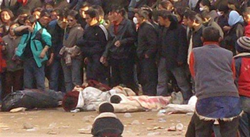
In this photo released by Tibetan Centre for Human Rights and Democracy Sunday, March 16, 2008, Tibetans donate money towards the prayers for the bodies of the Tibetans who were shot dead by Chinese soldiers during a demonstration at Kirti Monastery in Sichuan province, China. The bodies were brought into the monastery by Tibetan protesters for prayers. (AP/Tibetan Centre for Human Rights and Democracy, HO ) ** NO SALES ONE TIME USE ONLY ** Creation Date 03/18/2008 00:26:38. Submit Date 03/17/2008 20:55:35. |
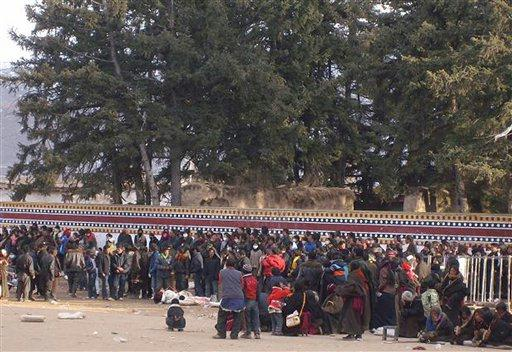
In this photo released by Tibetan Centre for Human Rights and Democracy, Tibetans gather around the bodies of Tibetans who were shot dead during demonstrations on Sunday, March 16, 2008, in Abu County, in Sichuan province, China. The bodies were brought into a monastery by Tibetan protesters for prayers. (AP Photo/Tibetan Centre for Human Rights and Democracy) ** NO SALES ONE TIME USE ONLY ** Creation Date 03/18/2008 00:26:38. Submit Date 03/17/2008 20:55:35. |
| 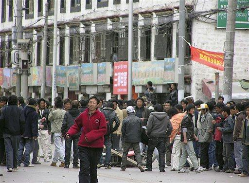
Demonstrators are seen on a street in Lhasa, capital of Tibet Autonomous Region, China, Friday March 14, 2008. Hundreds of armed police and soldiers patrolled the streets of Lhasa and enforced a strict curfew Sunday in a security clampdown on the Tibetan capital following violent protests that drew negative publicity for China ahead of the Beijing Olympics. (AP Photo) Submit Date 03/17/2008 12:40:48. |
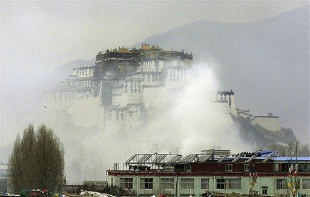
Smoke covers the center of Lhasa, capital of Tibet Autonomous Region, China as the town's land mark Potala Palace is barely seen on Friday March 14, 2008. Hundreds of armed police and soldiers patrolled the streets of Lhasa and enforced a strict curfew Sunday in a security clampdown on the Tibetan capital following violent protests that drew negative publicity for China ahead of the Beijing Olympics. (AP Photo) Submit Date 03/17/2008 12:40:18 |
| 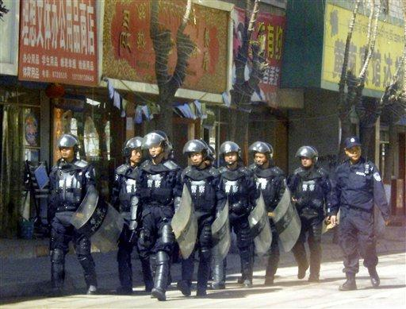
Police officers keep guard on a street in Tongren, Qinghai province, China Monday, March 17, 2008. The unrest in Tibet began March 10 on the anniversary of a 1959 uprising against Chinese rule of the region. (AP Photo/Kyodo News) ** JAPAN OUT MANDATORY CREDIT FOR COMMERCIAL USE ONLY IN NORTH AMERICA ** |
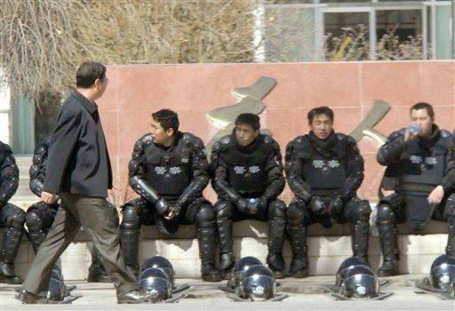
Police officers take a rest on a street in Tongren, Qinghai province, China Monday, March 17, 2008. The unrest in Tibet began March 10 on the anniversary of a 1959 uprising against Chinese rule of the region. (AP Photo/Kyodo News) ** JAPAN OUT MANDATORY CREDIT FOR COMMERCIAL USE ONLY IN NORTH AMERICA ** |
| 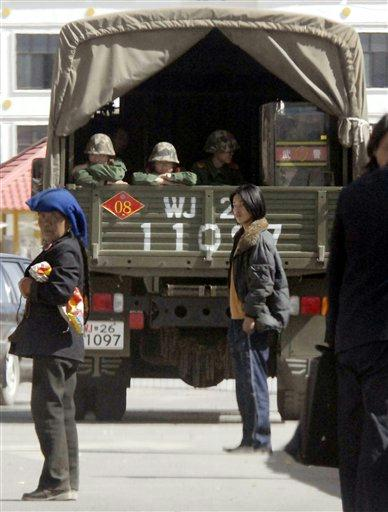
Police officers and others stand by on a truck on a street in Tongren, Qinghai province, China Monday, March 17, 2008. The unrest in Tibet began March 10 on the anniversary of a 1959 uprising against Chinese rule of the region. (AP Photo/Kyodo News) ** JAPAN OUT MANDATORY CREDIT FOR COMMERCIAL USE ONLY IN NORTH AMERICA ** |
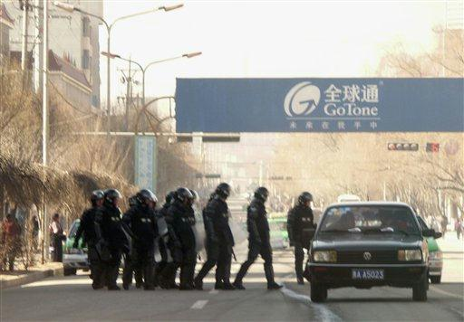
Riot police patrol on a street in Tongren, in China's Qinghai province Monday March 17, 2008. Protests spread from Tibet into three neighboring provinces as Tibetans defied a Chinese government crackdown, while the Dalai Lama decried what he called the "cultural genocide" taking place in his homeland. (AP Photo/Cara Anna) |
| 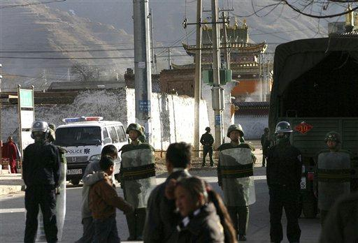
Tibetans walk past the Chinese riot police and military stand guard near the monastery in Tongren, in China's Qinghai province, Sunday March 16, 2008. Protests spread from Tibet into three neighboring provinces as Tibetans defied a Chinese government crackdown, while the Dalai Lama decried what he called the "cultural genocide" taking place in his homeland. (AP Photo) |
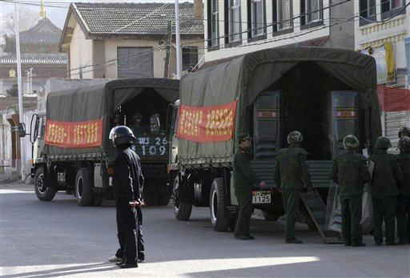
Chinese riot police and military stands guard on a street in Tongren, in China's Qinghai province, Sunday March 16, 2008. Protests spread from Tibet into three neighboring provinces as Tibetans defied a Chinese government crackdown, while the Dalai Lama decried what he called the "cultural genocide" taking place in his homeland. (AP Photo) |
| 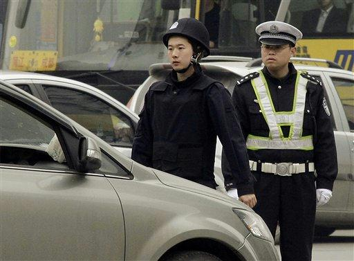
Police officers check the cars to enter the Tibetan quarter of the city Monday March 17, 2008 in Chengdu, China. The unrest in Tibet began March 10 on the anniversary of a 1959 uprising against Chinese rule of the region. Tibet was effectively independent for decades before communist troops entered in 1950. (AP Photo/Eugene Hoshiko) |
![[Image]](npict9.jpg)
Police officers check cars to enter the Tibetan quarter of Chengdu, China, Monday, March 17, 2008. The unrest in Tibet began March 10 on the anniversary of a 1959 uprising against Chinese rule of the region. Tibet was effectively independent for decades before communist troops entered in 1950. (AP Photo/Eugene Hoshiko) |
| 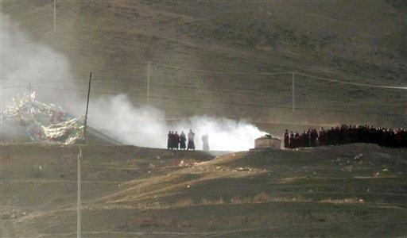
Monks burn incense on a hill above the Rongwu Monastery at Tongren, in China's Qinghai province Sunday March 16, 2008. Dozens of monks, defying a directive not to gather in groups, marched to a hill where they set off fireworks and burned incense in what one monk said was a protest. Protests spread from Tibet into three neighboring provinces as Tibetans defied a Chinese government crackdown, while the Dalai Lama decried what he called the "cultural genocide" taking place in his homeland. (AP Photo/Cara Anna) |
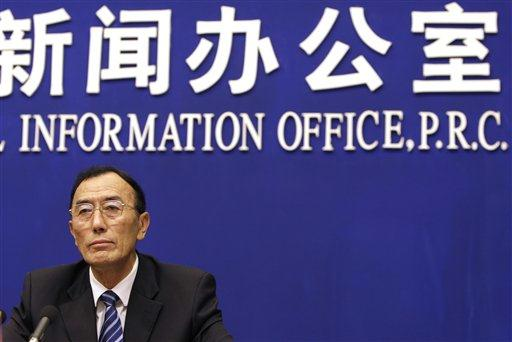
Tibet's governor Champa Phuntsok speaks during a press conference in Beijing Monday, March 17, 2008. Champa Phuntsok said Monday that 13 people were killed and dozens wounded in violence that broke out in the regional capital Lhasa last week, as Chinese troops fanned out to deal with protests that have spread to three neighboring provinces.(AP Photo/Oded Balilty) |
| 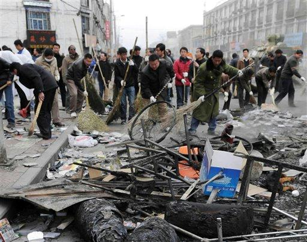
In this photo released by China's Xinhua News Agency, officials of local government and institutions clear up the burnt articles on a street in Lhasa, capital of southwest China's Tibet Autonomous Region Sunday, March 16, 2008. Tibet's governor said Monday that 13 people were killed and dozens wounded in violence that broke out in the regional capital Lhasa last week, as Chinese troops fanned out to deal with protests that have spread to three neighboring provinces. (AP Photo/Xinhua, Soinam Norbu) |
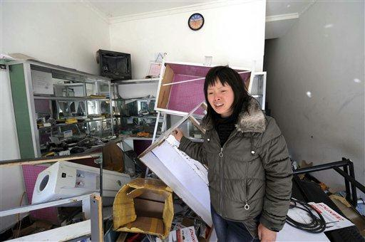
In this photo released by China's Xinhua News Agency, Fu Chaoying cries at her ravaged shop in Lhasa, capital of southwest China's Tibet Autonomous Region Sunday, March 16, 2008. Tibet's governor said Monday that 13 people were killed and dozens wounded in violence that broke out in the regional capital Lhasa last week, as Chinese troops fanned out to deal with protests that have spread to three neighboring provinces. (AP Photo/Xinhua, Chogo) |
| 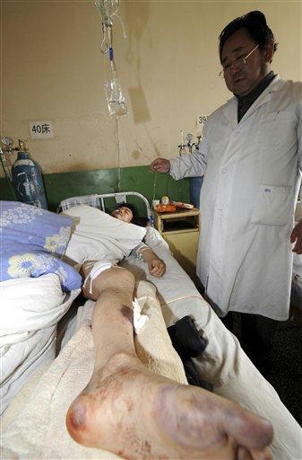
In this photo released by China's Xinhua News Agency, Wang Mingming injured in a riot receives medical treatment at the People's Hospital of Tibet Autonomous Region in Lhasa, capital of the region in southwest China Sunday, March 16, 2008. Tibet's governor said Monday that 13 people were killed and dozens wounded in violence that broke out in the regional capital Lhasa last week, as Chinese troops fanned out to deal with protests that have spread to three neighboring provinces. (AP Photo/Xinhua, Gaesang Dawa) |
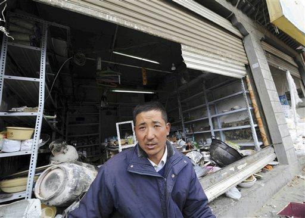
In this photo released by China's Xinhua News Agency, Ma Yaonai shows his damaged shop in Lhasa, capital of southwest China's Tibet Autonomous Region Sunday, March 16, 2008. Tibet's governor said Monday that 13 people were killed and dozens wounded in violence that broke out in the regional capital Lhasa last week, as Chinese troops fanned out to deal with protests that have spread to three neighboring provinces. (AP Photo/Xinhua, Chogo) |
| 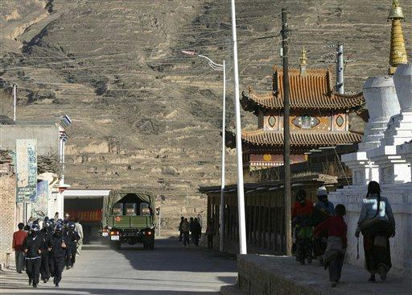
A troop of Chinese riot police, left, marches on a street in Tongren, in China's Qinghai province, Sunday March 16, 2008. Protests spread from Tibet into three neighboring provinces as Tibetans defied a Chinese government crackdown, while the Dalai Lama decried what he called the "cultural genocide" taking place in his homeland. (AP Photo) |
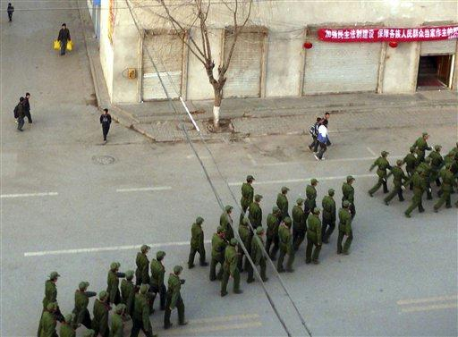
Chinese paramilitary police officers patrol on a street in Tongren, in China's Qinghai province, Monday, March 17, 2008. Protests spread from Tibet into three neighboring provinces as Tibetans defied a Chinese government crackdown, while the Dalai Lama decried what he called the "cultural genocide" taking place in his homeland. (AP Photo/Cara Anna) |
![[Image]](npict61.jpg)
Chinese riot police run past the Tibetans at a street heading to historic Labrang Monastery in Xiahe, Gansu Province, China, Sunday, March 16, 2008. On Saturday, police fired tear gas to disperse hundreds of Buddhist monks and other Tibetans after they marched from the historic Labrang monastery and smashed windows in the county police headquarters in Xiahe, witnesses said. (AP Photo/Andy Wong) |
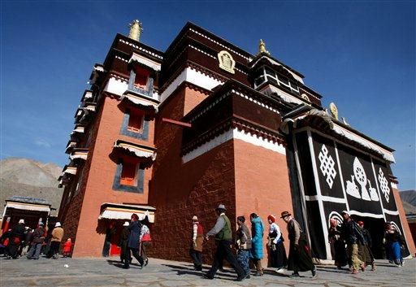
Tibetans circles a Buddhist temple as they offer prayer near the historic Labrang Monastery in Xiahe, Gansu Province, China, Sunday, March 16, 2008. On Saturday, police fired tear gas to disperse hundreds of Buddhist monks and other Tibetans after they marched from the historic Labrang monastery and smashed windows in the county police headquarters in Xiahe, witnesses said. (AP Photo/Andy Wong) |
| 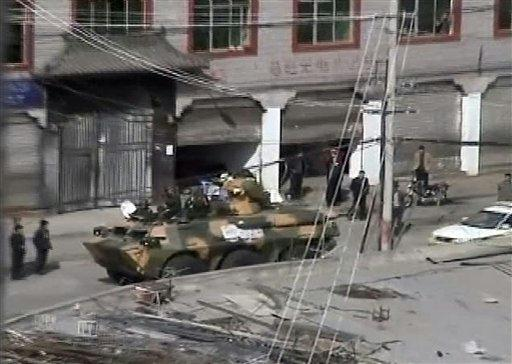
In this image taken from Cable TV video and provided by APTN, armored personnel carrier equipped with guns drives down street in Lhasa, capital of southwest China's Tibet Autonomous Region Sunday, March 16, 2008. Tibet's exiled government said Sunday that 80 people had been killed during protests in Lhasa as armed police and soldiers patrolled the capital's streets, enforcing a strict curfew in a security clampdown following violent demonstrations that drew negative publicity for China ahead of the Beijing Olympics. (AP Photo/Cable TV via APTN) ** TV OUT, HONG KONG OUT ** |
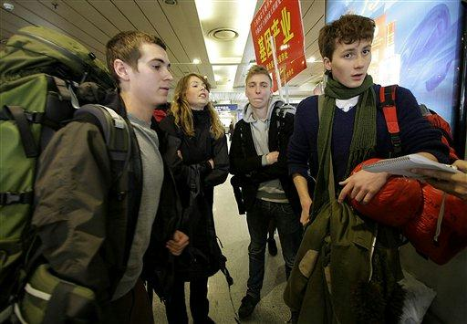
Andreas Larsen-Helms, right, Peter Moenster, 2nd from right, Mai Helbo, 2nd from left, and Thyge Pedersen, left, from Denmark count their experience to journalists upon their arrival Chengdu from Lhasa, the capital of Tibet Autonomous Region on Sunday March 16, 2008 at Chengdu Airport in Chengdu, China. The latest unrest began Monday on the anniversary of a 1959 uprising against Chinese rule. Tibet was effectively independent for decades before communist troops entered in 1950. (AP Photo/Eugene Hoshiko) |
| 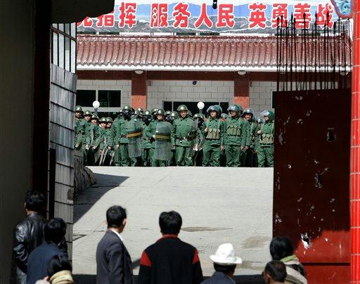
Tibetans look at the Chinese riot police standing in formation at a Chinese army compound in Xiahe, Gansu Province, China, Sunday, March 16, 2008. On Saturday, police fired tear gas to disperse hundreds of Buddhist monks and other Tibetans after they marched from the historic Labrang monastery and smashed windows in the county police headquarters in Xiahe, witnesses said.(AP Photo/Andy Wong) |
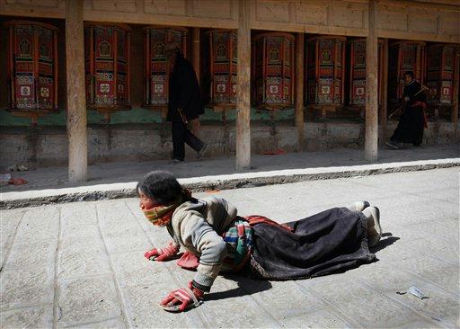
Tibetans offers prayer at the historic Labrang Monastery in Xiahe, Gansu Province, China, Sunday, March 16, 2008. On Saturday, police fired tear gas to disperse hundreds of Buddhist monks and other Tibetans after they marched from the historic Labrang monastery and smashed windows in the county police headquarters in Xiahe, witnesses said.(AP Photo/Andy Wong) |
| 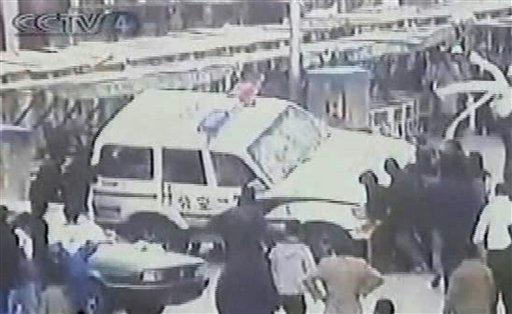
In this undated image taken Sunday, March 16, 2008, from CCTV and provided by APTN, people push over a car on a street in Lhasa, capital of southwest China's Tibet Autonomous Region. Tibet's exiled government said Sunday that 80 people had been killed during protests in Lhasa as armed police and soldiers patrolled the capital's streets, enforcing a strict curfew in a security clampdown following violent demonstrations that drew negative publicity for China ahead of the Beijing Olympics. (AP Photo/CCTV via APTN) ** TV OUT, CHINA OUT **. Captured by Chinese TV but censored on other sites with differeing context. |
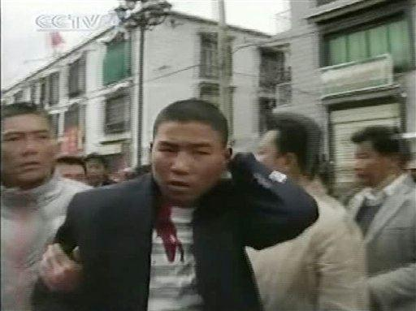
In this undated image taken Sunday, March 16, 2008, from China's CCTV via APTN, injured man is led on a street in Lhasa, capital of southwest China's Tibet Autonomous Region. Tibet's exiled government said Sunday that 80 people had been killed during protests in Lhasa as armed police and soldiers patrolled the capital's streets, enforcing a strict curfew in a security clampdown following violent demonstrations that drew negative publicity for China ahead of the Beijing Olympics. (AP Photo/CCTV via APTN) ** TV OUT, CHINA OUT. Captured by Chinese TV but censored on other sites with differeing context. ** |
| 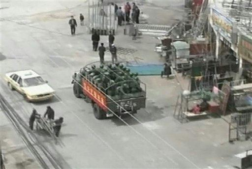
In this image taken from ATV Hong Kong via APTN, an army truck carrying security forces runs down street in Lhasa, capital of southwest China's Tibet Autonomous Region Sunday, March 16, 2008. Tibet's exiled government said Sunday that 80 people had been killed during protests in Lhasa as armed police and soldiers patrolled the capital's streets, enforcing a strict curfew in a security clampdown following violent demonstrations that drew negative publicity f |
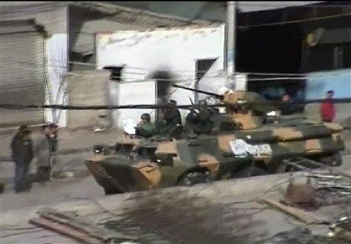
In this image taken from Cable TV video and provided by APTN, armored personnel carrier equipped with guns drives down street in Lhasa, capital of southwest China's Tibet Autonomous Region Sunday, March 16, 2008. Tibet's exiled government said Sunday that 80 people had been killed during protests in Lhasa as armed police and soldiers patrolled the capital's streets, enforcing a strict curfew in a security clampdown following violent demonstrations that drew negative publicity for China ahead of the Beijing Olympics. (AP Photo/Cable TV via APTN) ** TV OUT, HONG KONG OUT ** |
| 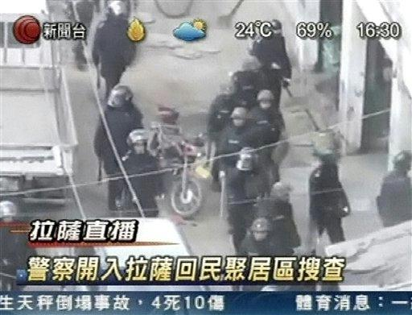
In this image taken from Cable TV video via APTN, military police patrol a street in Lhasa, capital of southwest China's Tibet Autonomous Region Sunday, March 16, 2008. Tibet's exiled government said Sunday that 80 people had been killed during protests in Lhasa as armed police and soldiers patrolled the capital's streets, enforcing a strict curfew in a security clampdown following violent demonstrations that drew negative publicity for China ahead of the Beijing Olympics. (AP Photo/Cable TV via APTN) ** TV OUT, HONG KONG OUT ** |
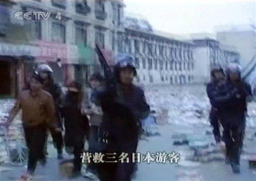
** THIS CORRECTS SOURCE ** In this undated image taken Sunday, March 16, 2008, from China's CCTV and provided by APTN, Japanese tourists are led by police on a street in Lhasa, capital of southwest China's Tibet Autonomous Region. Tibet's exiled government said Sunday that 80 people had been killed during protests in Lhasa as armed police and soldiers patrolled the capital's streets, enforcing a strict curfew in a security clampdown following violent demonstrations that drew negative publicity for China ahead of the Beijing Olympics. (AP Photo/CCTV via APTN) ** TV OUT, CHINA OUT **. Captured by Chinese TV but censored on other sites with differeing context. |
| 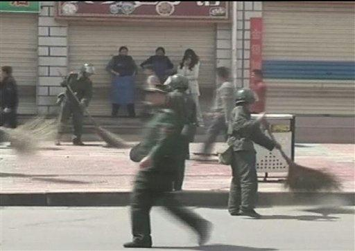
In this image taken from ATV Hong Kong via APTN, security forces clean up debris from street in Lhasa, capital of southwest China's Tibet Autonomous Region Sunday, March 16, 2008. Tibet's exiled government said Sunday that 80 people had been killed during protests in Lhasa as armed police and soldiers patrolled the capital's streets, enforcing a strict curfew in a security clampdown following violent demonstrations that drew negative publicity for China ahead of the Beijing Olympics. (AP Photo/ATV Hong Kong via APTN) ** TV OUT, HONG KONG OUT ** |
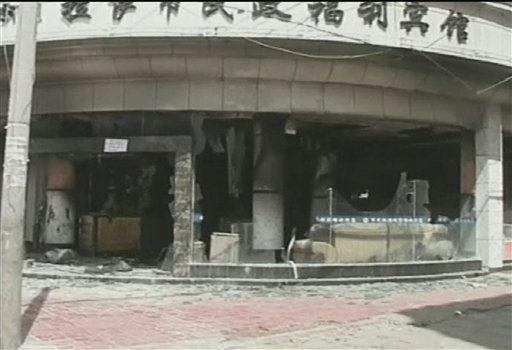
In this image taken from ATV Hong Kong via APTN, a damaged building is seen in Lhasa, capital of southwest China's Tibet Autonomous Region Sunday, March 16, 2008. Tibet's exiled government said Sunday that 80 people had been killed during protests in Lhasa as armed police and soldiers patrolled the capital's streets, enforcing a strict curfew in a security clampdown following violent demonstrations that drew negative publicity for China ahead of the Beijing Olympics. (AP Photo/ATV Hong Kong via APTN) ** TV OUT, HONG KONG OUT ** |
| 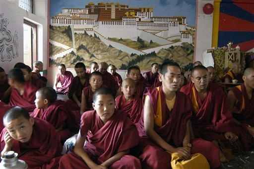
Tibetan monks offer prayers to those killed in the ancient Tibetan capital of Lhasa during the Chinese crackdown there on protestors at a monastery in Katmandu, Nepal, Sunday, March 16, 2008. China has stepped up security along its border with Nepal and has asked Nepalese officials to be on the lookout for pro-Tibet protests, officials said Sunday. (AP Photo/Binod Joshi) |
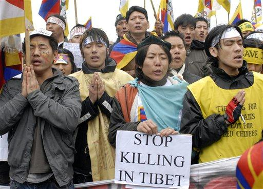
Tibetan expatriates demonstrate against the Chinese crackdown on protesters in Tibet, in front of the Palace of Justice, Brussels, Sunday, March 16, 2008. Some 500 protesters sang the Tibetan anthem, waved Tibetan flags and held banners saying "Stop Killing in Tibet" and "No Olympics in China." (AP Photo/Thierry Charlier) |
| 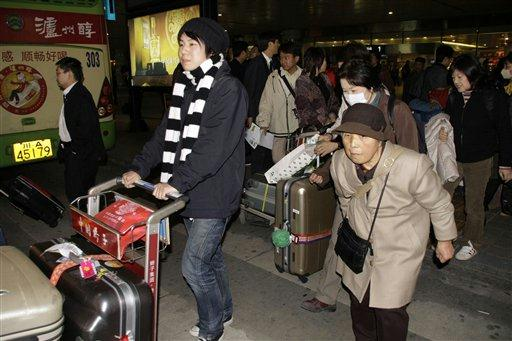
Japanese tour group carry their luggage upon their arrival in Chengdu from Lhasa, the capital of Tibet Autonomous Region on Sunday March 16, 2008 at Chengdu Airport in Chengdu, China. The latest unrest began Monday on the anniversary of a 1959 uprising against Chinese rule. Tibet was effectively independent for decades before communist troops entered in 1950. (AP Photo/Eugene Hoshiko) |
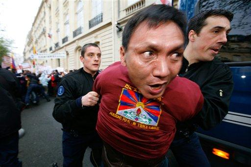
An activist of the France Tibet association, center, with the Tibetan flag printed on his jersey, is being taken away by French police officers during a demonstration against the violence in Tibet, Sunday, March 16, 2008, near the Chinese embassy in Paris. Violence spilled over from Tibet into neighboring provinces Sunday as Tibetan protesters defied a Chinese government crackdown while the Dalai Lama warned that the area faced "cultural genocide" and appealed to the world for help. The inscription on the jersey reads : "Let's act for a free Tibet". (AP Photo/Jacques Brinon) |
![[Image]](npict47.jpg)
An activist of the France Tibet association, center, is being taken away by police officers during a demonstration against the violence in Tibet, Sunday, March 16, 2008 near the Chinese embassy in Paris. Violence spilled over from Tibet into neighboring provinces Sunday as Tibetan protesters defied a Chinese government crackdown while the Dalai Lama warned that the area faced "cultural genocide", and appealed to the world for help. (AP Photo/Jacques Brinon) |
![[Image]](npict48.jpg)
An activist of the France Tibet association, foreground right, holding a flag of Tibet, reacts as he is held by riot police officers as a press photographer takes a photo, left, during a demonstration of the association's militants against the violence in Tibet, in front of the Chinese embassy in Paris, Sunday, March 16, 2008. Violence spilled over from Tibet into neighboring provinces Sunday as Tibetan protesters defied a Chinese government crackdown while the Dalai Lama warned that the area faced "cultural genocide" and appealed to the world for help. (AP Photo/Jacques Brinon) |
![[Image]](npict49.jpg)
A Tibetan protestor takes part in a protest in New Delhi, India, Sunday, March 16, 2008. Nearly 2,000 Tibetan exiles, the public voice of a region now largely sealed off from the rest of the world rallied Sunday and burned Chinese flags, ramping up their protests on behalf of demonstrators inside Chinese-ruled Tibet. (AP Photo/Mustafa Quraishi) |
![[Image]](npict58.jpg)
Chinese soldiers search protesters from building to building in Lhasa, capital of Tibet Autonomous Region, China on Saturday March 15, 2008. Hundreds of armed police and soldiers patrolled the streets of Lhasa and enforced a strict curfew Sunday in a security clampdown on the Tibetan capital following violent protests that drew negative publicity for China ahead of the Beijing Olympics. (AP Photo) ** CHINA OUT ** |
![[Image]](npict57.jpg)
Smoke cover the center of Lhasa, capital of Tibet Autonomous Region, China as the town's land mark Potala Palace, left, is barely seen, center left, on Friday March 14, 2008. Hundreds of armed police and soldiers patrolled the streets of Lhasa and enforced a strict curfew Sunday in a security clampdown on the Tibetan capital following violent protests that drew negative publicity for China ahead of the Beijing Olympics. (AP Photo) ** CHINA OUT ** |
![[Image]](npict55.jpg)
In this photo released by the Free Tibet Campaign, monks from the Labrang Monastery protest on a street in Xiahe, in China's Gansu province Friday March 14, 2008. (AP Photo/Free Tibet Campaign, HO) ** NO SALES ** |